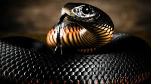

Black mambas live in the savannas and rocky hills of southern and eastern Africa. They are Africa's longest venomous snake, reaching up to 14 feet in length, although 8.2 feet is more the average.
- Scientific Name: Dendroaspis polylepis
- Average Length: 14 feet
- Average Lifespan: 11 Years
- Habitat: southern and eastern Africa
Black mambas are fast, nervous, lethally venomous, and when threatened, highly aggressive. They have been blamed for numerous human deaths, and African myths exaggerate their capabilities to legendary proportions. For these reasons, the black mamba is widely considered the world’s deadliest snake.Learn More here